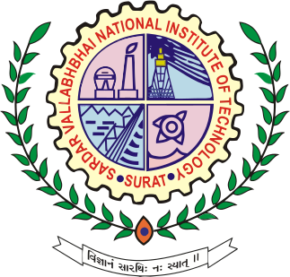

Academic timeline
07/17

Undergraduate studies in mechanical engineering
05/19
research on synthetic jet impingement (internship)
06/20
development of LISA module for pycbc (Internship)
09/21

Master in Fundamental Physics and application
07/22
research on premerger detection of GWs using higher modes (Internship)
09/22

Master in astrophysics
09/22
Research on waveform compression of EMRIs
02/23
research on exploring dark sectore using gw lensing (master thesis)
10/23
PhD : Working on population inference using GWs. Since GWs can travel without much dissipation and with new set of detectors one can expect to explore larger volume of the Universe, it is in principle possible to know some trends about the population of these compact objects.